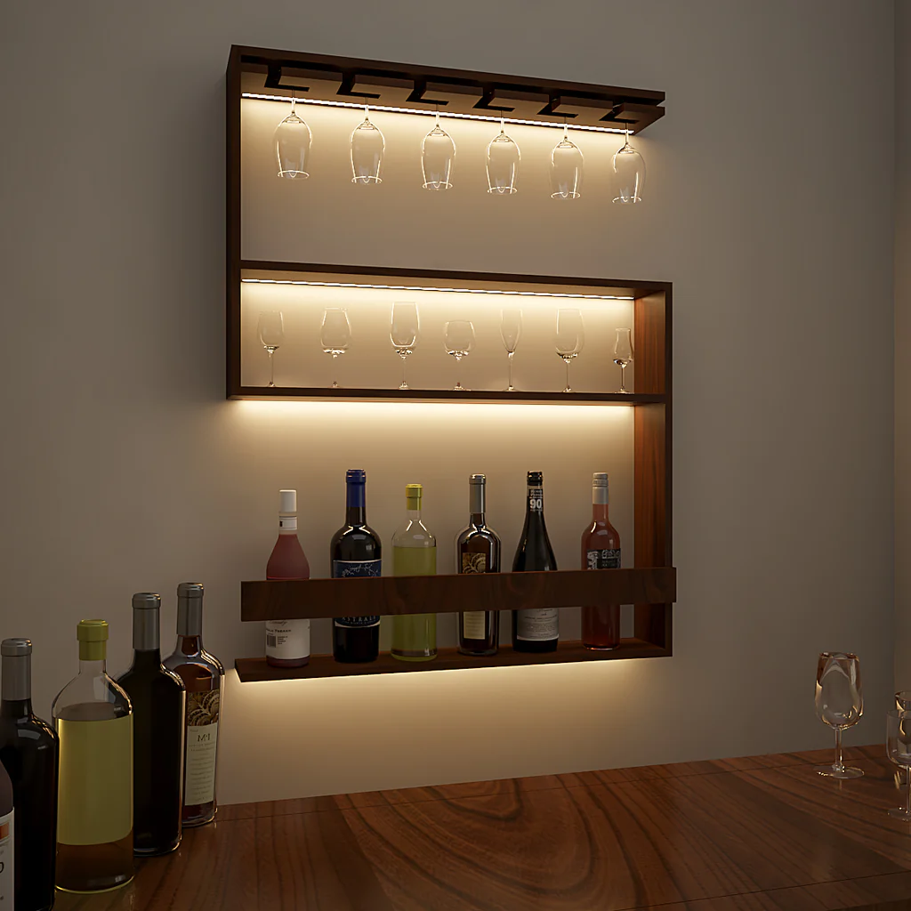
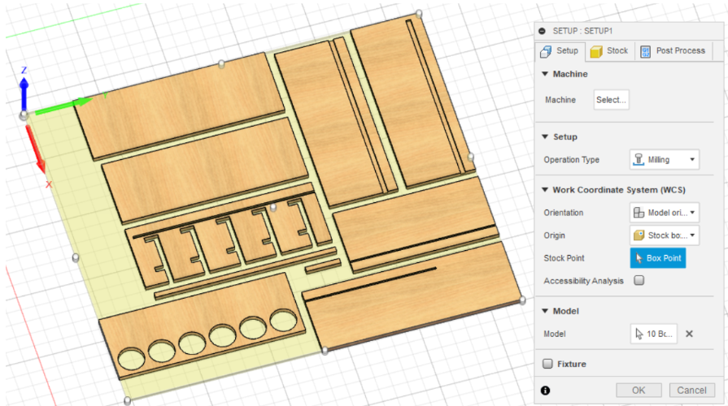
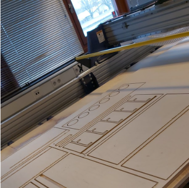
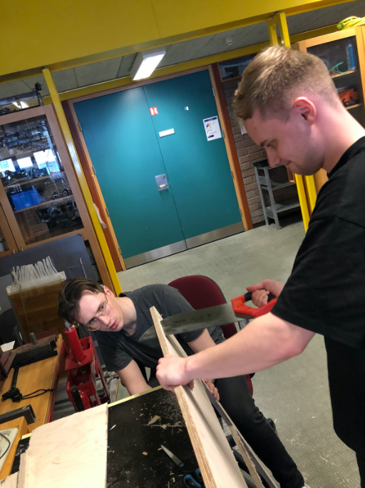
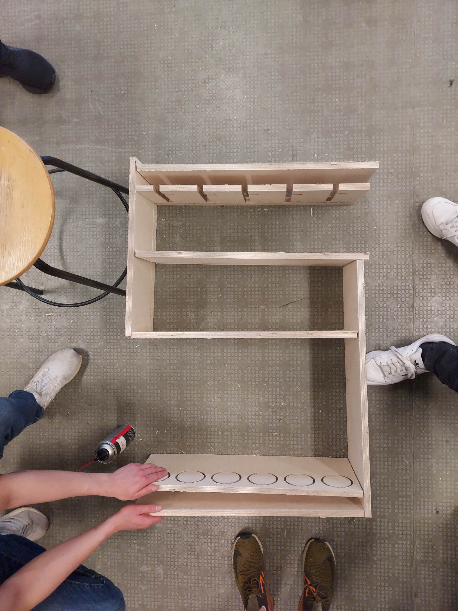

Inngangur
Við í hópnum okkar höfum áhuga á bar og kokteilagerð en okkur langaði að hanna og framleiða lítinn minibar til að geyma vínflöskur, glös og tilheyrandi baráhöldum. Nákvæm lýsing á verkefninu og verkferlum þess má sjá á heimasíðu Atla á þessum link. Geta má þess að verkefnið var unnið mikið þannig að allir hópmeðlimir voru að hjálpast að með hvern og einn verkþátt. Þar að leiðandi má segja að vinnuframlag hjá hverjum og einum var mjög svipað. En hér kemur stutt yfirlit yfir það sem ég gerði í verkefninu.
Alexander - Vinnuframlag
Hugmyndavinna
Ég skoðaði allskonar myndir og hugmyndir á google þangað til að ég rakst á þessa mynd sem er hér sýnd að neðan. Innblásturinn má nálgast á þessum link. Hópmeðlimir voru sammála að búa til svipaðan hlut nema með endurbætingum. Okkur langaði að koma fleiri glösum og vínflöskum fyrir.

Inventor vinna
Hafist var handa að teikna upp hlutinn í inventor. Mikilvægt var að hafa í huga að við höfðum einungis eina krossviðplötu (1500mm x 1500mm) til að vinna með svo barinn mátti ekki vera of stór. Eins og minnst var á að ofan má sjá nánari lýsingu á ferlinu á heimasíðu Atla.
Toolpaths
Þegar minibarinn var teiknaður og allir hópmeðlimir voru sáttir var hann færður yfir í Fusion 360. Þar voru toolpaths skilgreindir og minibarinn undirbúinn fyrir fræsingu. Allir í hópnum hjálpuðumst að.

Framleiðslan
File-inn var færður yfir í CNC fræsinn. Hafliði, kennarinn okkar, hjálpaði okkur að koma plötunni fyrir, festa niður og ræsa skurðinn í gang. Þegar búið var að fræsa plötuna sagaði ég hillurnar frjálsar út með handsög meðan Mikael og Atli hjálpuðu við að halda á móti.


Lokaniðurstaða
Hér að neðan má sjá mynd af minibarnum. Eina sem á eftir er að líma og skrúfa hann saman með tréskrúfum, bæta við vinklum svo hægt sé að hengja hann upp á vegg og loks setja led díóður.
